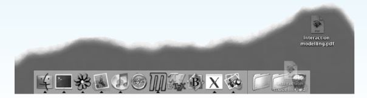
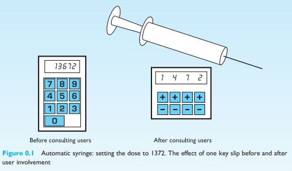

No Unified Theory of HCI
There is no single, unified theory of Human–Computer Interaction (HCI), and it may never exist. HCI is too broad and complex to be explained by one theory alone.
However, the authors propose an underlying principle:
People use computers to accomplish work, This principle leads to four key concerns in HCI:
- People – the users
- Computers – the technology
- Tasks – the work users want to accomplish
- Usability – how well the system supports those tasks
The Role and Problem of “Tasks”
Some critics argue that focusing on tasks is flawed because We do not fully understand human tasks well enough to design systems around them.
The authors accept this limitation but argue:
Our current understanding of tasks is sufficient to guide design, Designers study users’ existing tasks and build systems to support them.
Importantly, technology changes tasks over time Example:
Word processors allow easy editing and rearranging of text.
This freedom changed how people write (less rigid planning, more revision). As tasks evolve, system design must evolve too.
So this task evolution is not a problem—it drives system development and improvement.
Beyond “Work”: Use in Everyday Products
The idea of “tasks” or “work” becomes less clear for: Domestic appliances, Consumer electronics and E-commerce and entertainment systems.
To explain success in these areas, the authors introduce three essential conditions - A product must be:
- Useful – does what is needed (e.g., cook food, play music)
- Usable – easy, safe, natural to use
- Used – attractive, engaging, enjoyable, motivating
Is HCI a Science or a Craft?
The authors ask whether HCI is:
- A Science – based on rules, methods, and theories
- A Craft/Art – based on creativity, intuition, and inspiration
The authors compare HCI to architecture:
- Great buildings require artistic creativity
- But they must also stand up and function, which requires science
Similarly, HCI requires:
- Creative design for beautiful and innovative interfaces
- Scientific understanding to ensure usability and effectiveness
Why Science Is Necessary in HCI?!
Relying only on intuition is not enough because:
- Systems are increasingly complex
- Designers must consider multiple users and groups
- New technologies and media
- Different working styles
- Personal opinions of “good design” are unreliable at scale
Science helps by:
- Explaining why designs work or fail
- Allowing designers to reuse proven principles
- Making successful design repeatable, not accidental
DESIGN FOCUS
Things don’t change
It would be nice to think that problems like those described at the start of the Introduction would
never happen now. Think again! Look at the MacOS X ‘dock’ below. It is a fast launch point for applications; folders and files can be dragged there for instant access; and also, at the right-hand side, there
sits the trash can. Imagine what happens as you try to drag a file into one of the folders. If your finger
accidentally slips whilst the icon is over the trash can – oops!
Happily this is not quite as easy in reality as it looks in the screen shot, since the icons in the dock constantly move around as you try to drag a file into it. This is to make room for the file in case you want
to place it in the dock. However, it means you have to concentrate very hard when dragging a file over
the dock. We assume this is not a deliberate feature, but it does have the beneficial side effect that
users are less likely to throw away a file by accident – whew!
In fact it is quite fun to watch a new user trying to throw away a file. The trash can keeps moving as if
it didn’t want the file in it. Experienced users evolve coping strategies. One user always drags files into
the trash from the right-hand side as then the icons in the dock don’t move around. So two lessons:
- designs don’t always get better
- but at least users are clever.

DESIGN FOCUS
Quick Fixes
You should expect to spend both time and money on interface design, just as you would with other
parts of a system. So in one sense there are no quick fixes. However, a few simple steps can make a
dramatic improvement.
Think ‘user’
Probably 90% of the value of any interface design technique is that it forces the designer to remember
that someone (and in particular someone else) will use the system under construction.
Try it out
Of course, many designers will build a system that they find easy and pleasant to use, and they find
it incomprehensible that anyone else could have trouble with it. Simply sitting someone down with
an early version of an interface (without the designer prompting them at each step!) is enormously
valuable. Professional usability laboratories will have video equipment, one-way mirrors and other
sophisticated monitors, but a notebook and pencil and a home-video camera will suffice.
Involve the users
Where possible, the eventual users should be involved in the design process. They have vital knowledge and will soon find flaws. A mechanical syringe was once being developed and a prototype was
demonstrated to hospital staff. Happily they quickly noticed the potentially fatal flaw in its interface.

The doses were entered via a numeric keypad: an accidental keypress and the dose could be out by a
factor of 10! The production version had individual increment/decrement buttons for each digit.
Iterate
People are complicated, so you won’t get it right first time. Programming an interface can be a very
difficult and time-consuming business. So, the result becomes precious and the builder will want
to defend it and minimize changes. Making early prototypes less precious and easier to throw away is
crucial. Happily there are now many interface builder tools that aid this process. For example, mockups can be quickly constructed using HyperCard on the Apple Macintosh or Visual Basic on the PC.
For visual and layout decisions, paper designs and simple models can be used.
My UI Design of: Automatic Syringe Dose Calculator (Task given by Ma'am)